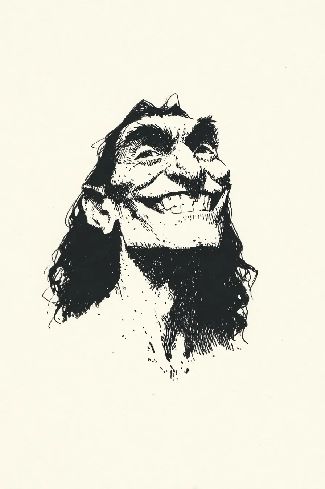

마을 사람들은 내가 용을 죽인 손으로 그 작은 음식을 집을 수 있을지 의심했다.\
The villagers doubted whether the same hands that killed a dragon could hold that tiny food.
그들은 "버거"라고 불렀는데, 내가 아는 버거라는 전사는 적어도 검을 제대로 잡을 수 있었다.\
They called it a "burger," but the Burger I knew was at least able to hold a sword properly.
나는 양손으로 조심스럽게 집어 들었지만, 부드러운 빵이 내 거친 손가락에 으스러졌다.\
I carefully picked it up with both hands, but the soft bread crumbled under my calloused fingers.
"케첩을 써보세요," 어린 소녀가 빨간 병을 내밀며 말했고, 나는 그것이 전투에서 본 독 비슷하다고 생각했다.\
"Try ketchup," a young girl said, holding out a red bottle, and I thought it looked like poison I'd seen in battle.
병을 뒤집어도 아무것도 안 나와서, 나는 평소 성문을 부술 때처럼 병 밑을 힘껏 쳤다.\
When nothing came out after turning the bottle upside down, I struck the bottom as hard as I usually hit castle gates.
케첩이 폭발했다.\
The ketchup exploded.
내 수염, 내 가죽 갑옷, 창가 할머니의 하얀 머리카락까지 모두 선홍색 점들로 뒤덮였다.\
My beard, my leather armor, even the white hair of the grandmother by the window were covered in crimson dots.
한 여자가 "피다!"라고 외쳤고, 두 남자가 무기를 찾으려 허둥댔지만, 소녀만 배를 잡고 웃었다.\
A woman shouted "Blood!" and two men scrambled looking for weapons, but only the girl clutched her stomach laughing.
"아니에요," 소녀가 숨을 고르며 말했다. "살짝만 톡톡 두드려야 해요."\
"No," the girl said, catching her breath. "You have to tap it lightly."
나는 케첩 범벅이 된 버거를 입으로 가져갔고, 단맛과 신맛이 혀끝에서 춤을 췄다.\
I brought the ketchup-soaked burger to my mouth, and sweetness and tartness danced on my tongue.
이것은 생 사슴고기도, 딱딱한 검은빵도 아니었다. 이것은 신들의 농담이었다.\
This wasn't raw venison or hard black bread. This was a joke from the gods.
"더 주세요," 나는 케첩 묻은 손을 들며 말했고, 소녀의 아버지가 새로운 고객을 얻은 듯 신중하게 고개를 끄덕였다.\
"More, please," I said, raising my ketchup-stained hand, and the girl's father nodded cautiously like he'd gained a new customer.